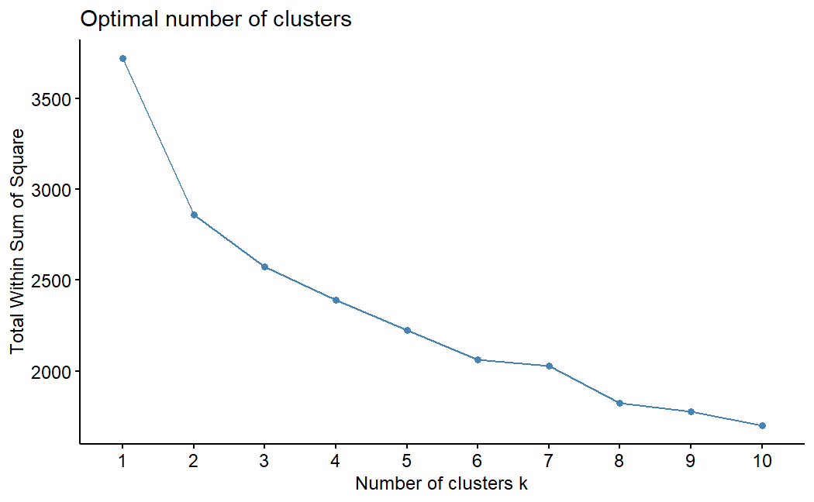
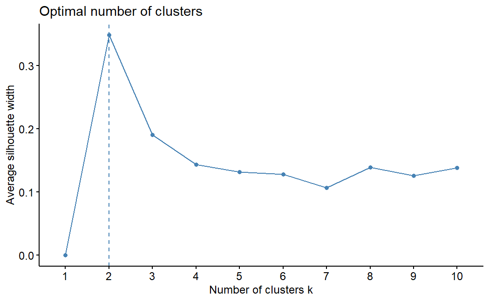
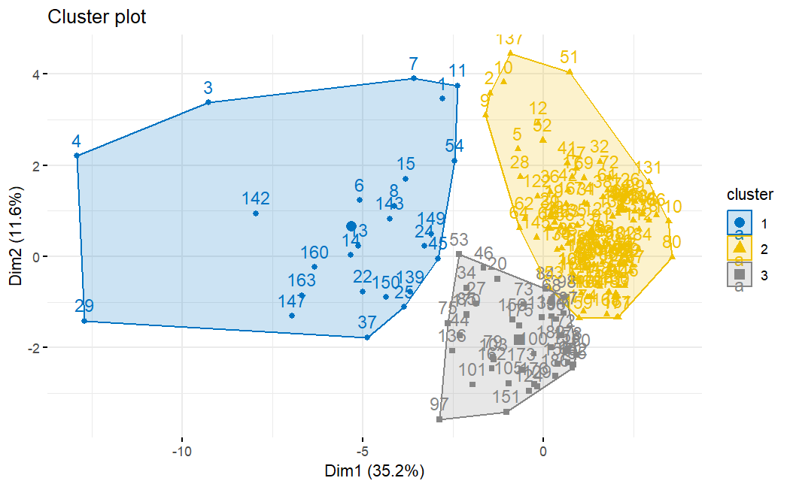
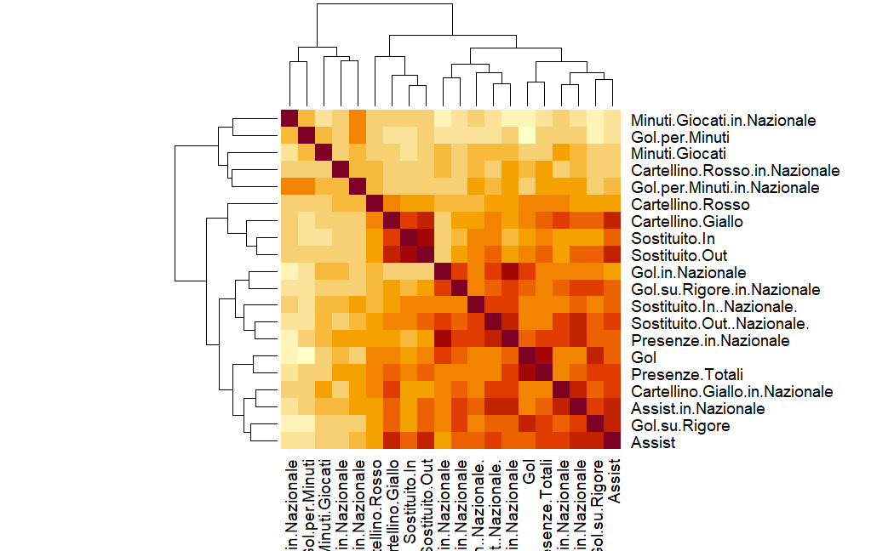
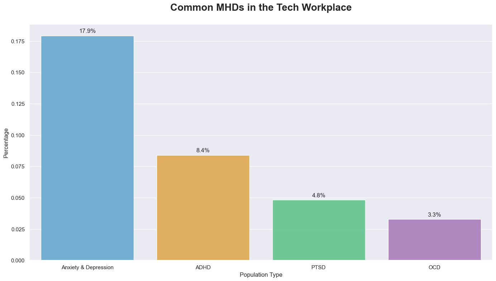
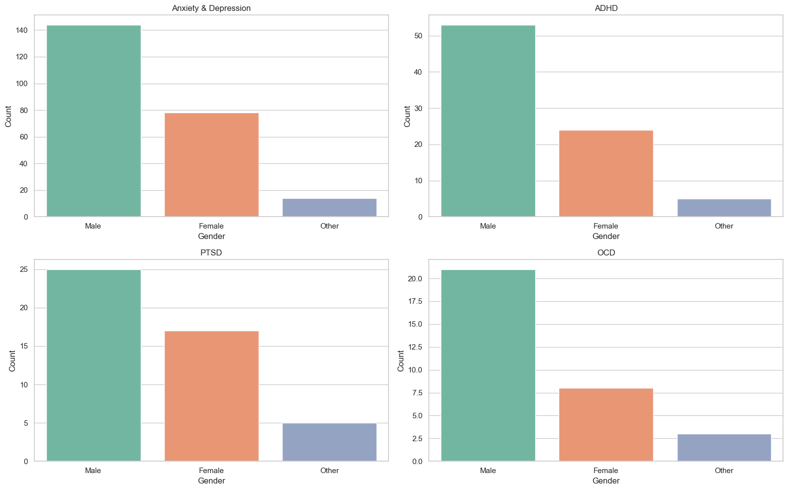
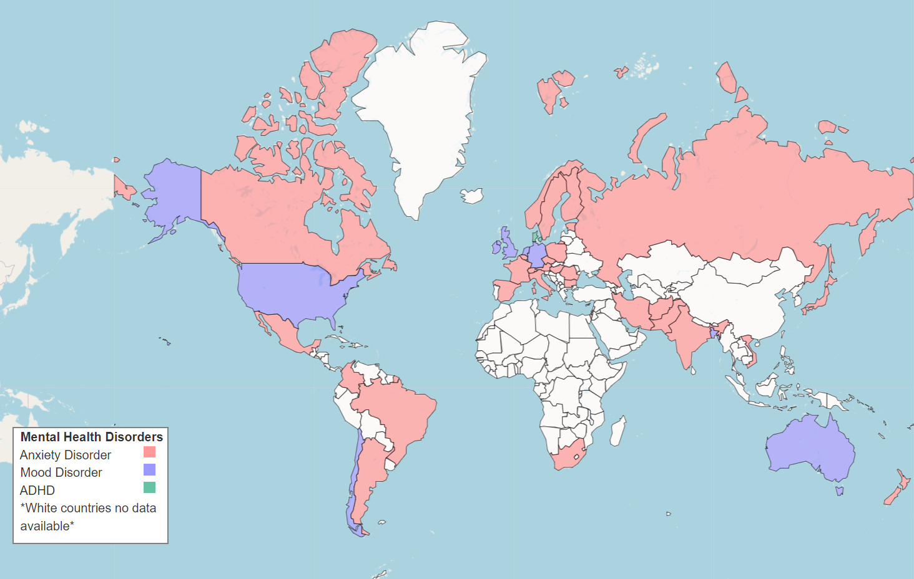
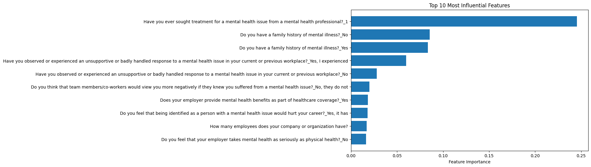
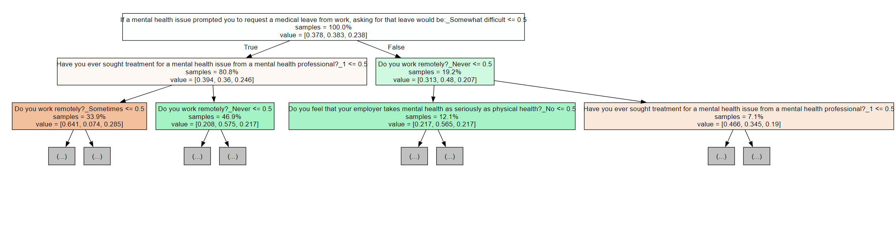

Exploring data, building solutions, and learning through experimentation
LinkedIn Comment Scraper
PythonSeleniumAutomationWeb Scraping
Automation pipeline that loads and preserves dynamic LinkedIn post comment threads for downstream NLP & analytics.
Open details
Italian Forward Report 2024
PythonRPCAClusteringCARTRandom Forest
Data-driven evaluation of historical & current Italian national team forwards to project goal contribution for UEFA Euro 2024.
Open details
Mental Health in Tech: OSMI 2016
PythonEDAModelingHR Analytics
Cleaned and analyzed OSMI 2016 to reveal how workplace culture and resources relate to mental health outcomes.
Open details
Pandoro Gate NLP Analysis
PythonNLPSentiment AnalysisTopic Modeling
In-depth analysis of public opinion on social media surrounding the "Pandoro Gate" scandal using NLP techniques.
Open details
Customer Churn Prediction
PythonScikit-learnClassificationEDA
Developed a model to predict telecom customer churn, identifying key drivers and enabling proactive retention strategies.
Open details
Automated Journalism
PythonLangChainLLMsStreamlit
AI-powered pipeline to generate journalistic articles from structured data, automating repetitive writing tasks.
Open details
LinkedIn Comment Scraper
Automated extraction of dynamic LinkedIn comment threads for structured analysis and downstream NLP enrichment.
PythonSeleniumWeb ScrapingAutomation
In a world where social media conversations hold immense value for understanding public sentiment, engagement patterns, and community dynamics, I built a tool that bridges the gap between LinkedIn's professional discourse and actionable data insights. This project automates the extraction of comments from LinkedIn posts, transforming ephemeral conversations into structured data ready for analysis.
The Challenge
LinkedIn's dynamic, JavaScript-heavy interface presents unique challenges for data extraction. Unlike static websites, comments load progressively, requiring interaction with the page to reveal the full conversation. The platform's authentication layer and anti-scraping measures add another dimension of complexity. The goal was clear: create a reliable, automated pipeline that could navigate these obstacles while respecting the platform's structure.
Key Insight: Modern web scraping isn't just about parsing HTML—it's about simulating human behavior, understanding asynchronous content loading, and building robust systems that can handle the unpredictable nature of dynamic web applications.
Technical Deep Dive
🔐 Authentication Layer
Implemented secure credential management with automated login flow using Selenium WebDriver, handling LinkedIn's authentication challenge while maintaining session persistence.
🔄 Dynamic Content Loading
Engineered an intelligent pagination system that detects and clicks "Load More" buttons recursively, ensuring complete comment extraction regardless of thread length.
🎯 Smart Element Selection
Utilized XPath and CSS selectors to reliably target comment sorting options, switching to "Most Recent" view for chronological data organization.
💾 Data Preservation
Captured the complete rendered HTML state, creating a snapshot that preserves all loaded comments for offline processing with BeautifulSoup.
The Architecture
The scraper follows a three-stage pipeline architecture:
Stage 1: Initialization & Authentication
The WebDriver initializes with Microsoft Edge, navigating to LinkedIn's login portal. Credentials are securely injected, and the system waits for successful authentication before proceeding.
Stage 2: Navigation & Dynamic Loading
Once authenticated, the scraper navigates to the target post URL. It intelligently identifies and interacts with comment sorting menus, then enters a recursive loop to load all hidden comments.
Stage 3: Extraction & Persistence
With all comments visible, the complete page source is captured and saved as HTML. This decouples scraping from parsing, allowing for flexible downstream analysis.
Code Walkthrough
Here's how the comment loading mechanism works—the heart of the automation:
# Recursive comment loading algorithm
while True:
try:
load_button = driver.find_element(
By.XPATH,
"//button[contains(@aria-label, 'Load more')]"
)
driver.execute_script(
"arguments[0].scrollIntoView();",
load_button
)
load_button.click()
time.sleep(2) # Allow content to render
except:
break # No more comments to load
This elegant loop continues until the "Load more" button disappears, indicating all comments are visible. The scroll behavior ensures elements are in the viewport before interaction, preventing common Selenium exceptions.
Beyond Basic Scraping
What makes this project particularly interesting is its extensibility. The saved HTML serves as a foundation for sophisticated analysis:
Sentiment Analysis: Feed comment text into NLP models to gauge audience reaction to posts
Network Mapping: Extract commenter profiles to build engagement networks and identify key influencers
Temporal Analysis: Study comment velocity and timing to understand optimal posting schedules
Content Strategy: Analyze which topics generate the most meaningful discussions
Ethical Consideration: This project exists in the educational space, designed to understand web automation and data extraction techniques. Real-world applications must respect LinkedIn's Terms of Service, rate limiting, and user privacy. The goal is learning, not exploitation.
What I Learned
Building this scraper reinforced several key principles that extend beyond just technical implementation. I learned that effective web scraping is as much about understanding human-computer interaction patterns as it is about code. The challenges of timing, state management, and error handling in a dynamic environment taught me to think in terms of systems resilience rather than just functionality.
Perhaps most importantly, this project highlighted the importance of separating concerns—keeping scraping logic distinct from parsing logic creates more maintainable, flexible systems that can adapt as websites evolve.
Italian Forward Report – UEFA Euro 2024 Projection
Integrated scraping, multivariate reduction, clustering, and predictive modeling (CART & Random Forest) to estimate national-team goal potential for current Italian forwards.
Aim: predict which current Italian forwards would be most effective if called for Euro 2024 using historical national-team forward data from Transfermarkt.
Target variable: National Team Goals. Players classified by comparing predicted goals (ypred) vs actual (ytrue):
Overperforming: y_true > y_predUnderperforming: y_true < y_pred
Pipeline phases: Scraping (Python) → PCA → Clustering → CART → Random Forest → Conclusion (R for analytical phases).
Assumption: Goals as proxy for overall forward contribution (simplification — excludes pressing or creation effects).
Data Acquisition (Transfermarkt Scrape)
Source chosen for depth of historical coverage (Meazza, Piola, etc.). Steps: paginated profile harvesting (requests + BeautifulSoup), name sanitization (regex), per-player stat extraction (appearances, goals, assists, substitutions, cards, penalties, per-minute metrics), results persisted to players.csv and player_stats.csv. Errors logged; missing structured values handled gracefully.
Dataset Variables (20):
Player Name; Total Appearances; Goals; Assists; Substituted In; Substituted Out; Yellow Card; Red Card; Goals from Penalty; Goals per Minutes; National Team Appearances; National Team Goals; National Team Assists; Substituted In (NT); Substituted Out (NT); Yellow Card (NT); Red Card (NT); Goals from Penalty (NT); Goals per Minutes (NT); Minutes Played (NT).
Principal Component Analysis (PCA)
PC1 35.16%PC2 11.59%PC1–2 46.75%Focus PCs: 1–3
FactoMineR + factoextra used after numeric cleaning (removing non-digit characters from rate features). PC1 dominated variance (usage & productivity blend); PC2 separated complementary contribution aspects. Outlier profile: Francesco Totti. Strong correlation observed: Minutes Played (NT) ↔ Goals per Minutes (indicative of sustained efficiency).
K-means applied to standardized numeric performance metrics (Elbow + Silhouette for k selection). Distinct clusters reveal archetypes of efficiency, volume, and hybrid contribution. Correlation heatmap clarifies intra-cluster variable influence.

Elbow Method – diminishing WCSS returns

Silhouette – average separation quality

Cluster Projection – player grouping in reduced space

Correlation Matrix – relationships among metrics
Next Enhancement: Label clusters semantically (e.g., “High-Usage Finishers”, “Efficient Impact Subs”) once descriptive summaries finalized.
CART Modeling
rpart regression tree (method="anova") trained on historical forwards. Predictors: all numeric performance metrics; target: National Team Goals. Tree visualized with rpart.plot for interpretability (split hierarchy: usage → efficiency → discipline).
MAE 4.91MSE 53.00R² -0.69
Indicates poor generalization—high variance not captured by simple hierarchical splits. Overperformers vs model expectations (CART perspective): Immobile, Balotelli, Berardi, Colombo, El Shaarawy.
Random Forest Ensemble
randomForest (ntree=100) improved stability via bagged decorrelated trees. Predictions rounded to nearest integer to reflect discrete goal totals.
Asterisked Random Forest metrics differ from earlier narrative (MAE 3.36, MSE 18.64, R² 0.41). Final set pending confirmation.
Evaluation & Classification Logic
# Pseudocode for performance classification
for player in current_players:
y_pred = model.predict(player.features)
y_true = player.national_team_goals
if y_true > y_pred:
player.status = "overperforming"
elif y_true < y_pred:
player.status = "underperforming"
else:
player.status = "on expectation"
Future refinement: incorporate Poisson or Negative Binomial modeling for goal counts; add per-90 normalization, age curve adjustments, and injury history weighting.
Conclusion
Combined multivariate reduction (PCA), unsupervised grouping (Clustering), and predictive modeling (CART vs Random Forest) to construct a structured ranking framework for Italian forwards. Ensemble approach (RF) improved error metrics and interpretive robustness—pending metric reconciliation.
Methodological extensibility: integrate expected goals (xG), pressing events, shot quality, and chance creation for richer forward profiling. This analytical stack can generalize to other national squads or club scouting contexts.
Assumptions & Limitations
Simplification: raw goals treated as holistic performance proxy. Omitted: off-ball movement, pressing intensity, link-up play, defensive contribution. Model variance and negative R² (CART) highlight need for richer feature engineering. Overperformer designation sensitive to small-sample goal volatility.
Mental Health in Tech — OSMI 2016 Analysis
From raw survey to actionable HR insights: cleaning, visual exploration, and modeling to understand workplace mental health drivers.
PythonEDAVisualizationModelingHR Analytics
Introduction
Mental health affects productivity, well‑being, and organizational success. Using the OSMI Mental Health in Tech
Survey 2016, we explore how awareness, resources, and workplace culture relate to employee outcomes to inform HR policy.
Objectives: Clean, visualize, and model outcomes tied to workplace factors.
Audience: HR and tech leadership.
Outputs: Key visuals and concise, actionable recommendations.
Data Cleaning
Starting from 1,433 rows × 63 columns, we addressed high missingness, conditional questions, inconsistent formats, and redundant fields.
Handling Missingness
• Dropped columns >50% missing (resources/impacts).
• Removed 287 rows with NA in employer mental health benefits to unlock dependent workplace fields (size, tech org, formal discussion, anonymity, resources, leave ease, perceived consequences, comfort levels).
• Dropped NA rows for “unsupportive/badly handled response”.
• Set conditional NA to “Not Applicable” (US state work/live; diagnosis-related prompts).
Standardization & Redundancy
• Gender normalized to {Male, Female, Other}.
• Removed “Are you self‑employed?” and “Do you have previous employers?” (uninformative).
• Corrected age outliers (323→32; 3→30; 99→30).
Core patterns: prevalence by disorder, gender differences, and geographic spread. Respondents are largely 25–40 and US-based; concerns about stigma and negative consequences are prominent.

Disorder prevalence — Anxiety and Mood disorders dominate across respondents

Disorders by gender — differences across Male, Female, and Other categories

Geography — Anxiety prevalent across Europe/Canada/Russia/Asia; Mood disorders in US/UK/Chile/Australia; ADHD notable in Denmark
Modeling
Target: presence of mental health disorder (three outcomes). Categorical features one‑hot encoded. Models compared:
Random Forest, Logistic Regression, Gradient Boosting (GBM), and Decision Tree.
Random Forest (best performer)
n_estimators=200; max_depth=7; min_samples_leaf=5. Test accuracy: 64%. Handles non‑linear interactions and provides feature importance.
Struggled with “Maybe” class, indicating ambiguity is harder to learn.
Logistic Regression
C=1.5; max_iter=1000. Test accuracy: 53%. Linear decision boundary limits performance on complex relationships.
Gradient Boosting (GBM)
n_estimators=100; learning_rate=0.001; randomized depth to curb overfitting. Test accuracy: 62%. Sequential nature increases tuning sensitivity.
Decision Tree
max_depth=3. Test accuracy: 64%. Interpretable, but limited on complex, non‑linear patterns and “Maybe” class.
Model
Train Accuracy
Test Accuracy
Random Forest
70%
64%
Logistic Regression
71%
53%
Gradient Boosting
64%
62%
Decision Tree
65%
64%

Feature importance — treatment seeking, family history, workplace response quality, stigma perceptions, and benefits rank highest

Random Forest — representative tree highlighting primary split logic
Conclusions & Recommendations
Random Forest balances interpretability and accuracy for this dataset. Key drivers: prior professional treatment,
family history, workplace handling of MH issues, stigma concerns, and benefits availability.
An in-depth analysis of public opinion on social media surrounding the "Pandoro Gate" scandal, using Natural Language Processing to extract sentiment and key discussion topics.
PythonNLPSentiment AnalysisTopic ModelingLDASocial Media Analysis
Introduction
The "Pandoro Gate" scandal involving Chiara Ferragni became a major media event in Italy, sparking intense public debate. This project aims to cut through the noise and quantitatively analyze the public's reaction on social media. By applying NLP techniques to a large dataset of comments, we can uncover the dominant sentiments and the core themes of the conversation.
The Challenge
Social media data is inherently unstructured, noisy, and voluminous. The main challenge was to process thousands of comments written in informal language, complete with slang, emojis, and sarcasm, and transform them into structured, analyzable data. The goal was to build a pipeline that could reliably gauge public opinion and identify what aspects of the scandal people were most focused on.
Key Objective: Move beyond anecdotal evidence and provide a data-driven picture of the public's response to the crisis, identifying key emotional drivers and conversational themes.
Technical Methodology
📊 Data Collection
Comments were scraped from the Instagram posts of Chiara Ferragni, Fedez, and other relevant public figures and news outlets that covered the story.
🧹 Data Preprocessing
A crucial step involving text cleaning: removal of stopwords, punctuation, and URLs; lowercasing; and lemmatization to standardize the text for analysis.
😃 Sentiment Analysis
A pre-trained sentiment analysis model was used to classify each comment as positive, negative, or neutral, providing a high-level view of the overall emotional tone.
🔍 Topic Modeling (LDA)
Latent Dirichlet Allocation (LDA) was applied to the corpus of comments to discover abstract topics and the key themes of discussion within the conversation.
Key Findings
The analysis of the social media comments revealed several clear patterns:
Overwhelmingly Negative Sentiment: The vast majority of comments expressed negative sentiment towards Chiara Ferragni, indicating significant public disapproval.
The main topics identified through LDA revolved around:
Deception and Trust: Words like "scam," "lies," and "trust" were prominent, showing a focus on the perceived dishonesty of the affair.
Charity and Money: A significant portion of the conversation centered on the themes of "charity," "money," and "donations," questioning the commercial nature of the initiative.
Apology and Responsibility: The apology video was a major topic, with discussions around its sincerity and the legal consequences ("fine," "investigation").
Brand Image: The impact on Ferragni's brand and her role as an influencer was a recurring theme.
Conclusion
This NLP analysis provided a structured and quantitative view of the public's reaction to the Pandoro Gate scandal. The findings confirm a significant negative shift in public perception, driven by feelings of betrayal and mistrust. The project demonstrates the power of NLP to distill meaningful insights from vast amounts of unstructured social media data, offering a valuable tool for crisis management and brand reputation analysis.
A machine learning project focused on predicting customer churn for a telecommunications company, comparing multiple classification models to find the most effective solution.
Customer churn is a critical metric for subscription-based businesses like telecommunications companies. Acquiring new customers is far more expensive than retaining existing ones. This project tackles the churn problem by building a predictive model that can identify customers who are likely to cancel their service. The goal is to provide the business with actionable insights to proactively engage at-risk customers with targeted retention campaigns.
Data Exploration and Preprocessing
The project started with a comprehensive Exploratory Data Analysis (EDA) of the telecom customer dataset. Key insights from the EDA showed that churn was significantly influenced by factors like:
Contract Type: Customers on month-to-month contracts were much more likely to churn.
Tenure: New customers (low tenure) had a higher churn rate.
Online Security and Tech Support: Customers without these services were more likely to leave.
Payment Method: Customers paying by electronic check had a higher churn rate.
Data preprocessing involved handling categorical variables through one-hot encoding and scaling numerical features using `StandardScaler` to prepare the data for various machine learning models.
Modeling and Evaluation
Several classification models were trained and evaluated to find the best predictor of customer churn. The models included:
Logistic Regression
A baseline model that provides a good starting point due to its interpretability.
Support Vector Machine (SVM)
A powerful model that can find complex relationships in the data.
Decision Tree
A simple, interpretable model that visualizes the decision-making process.
Random Forest
An ensemble model that combines multiple decision trees to improve accuracy and reduce overfitting.
The models were evaluated based on accuracy, precision, recall, and F1-score. The Random Forest classifier emerged as the top-performing model.
Model
Accuracy
Precision
Recall
F1-Score
Logistic Regression
80.4%
65.9%
54.9%
59.9%
SVM
79.6%
64.0%
51.5%
57.1%
Decision Tree
72.8%
48.8%
50.0%
49.4%
Random Forest
79.2%
64.8%
47.0%
54.5%
Top Predictors: `TotalCharges`, `MonthlyCharges`, and `tenure`. This confirms the intuition that financial aspects and customer loyalty are the primary drivers of churn.
Conclusion
This project successfully developed a machine learning model capable of predicting customer churn with reasonable accuracy. The Random Forest model proved to be the most effective, and its feature importance analysis provided valuable insights into the key drivers of churn.
Business Impact: By deploying this model, a telecommunications company can identify at-risk customers in advance and target them with personalized offers, loyalty programs, or improved customer service, ultimately reducing churn and increasing profitability.
Automated Journalism with NLP and Generative AI
A proof-of-concept system that leverages Large Language Models (LLMs) and prompt engineering to automatically generate journalistic articles from structured data sources.
PythonLangChainLLMsPrompt EngineeringNLPStreamlitGenerative AI
The Problem
Journalists often spend significant time writing formulaic, data-driven articles, such as financial earnings reports, sports game summaries, or election results. While essential, this repetitive work consumes valuable time that could be spent on in-depth investigative journalism. The challenge is to automate the creation of these articles while maintaining accuracy, adhering to a specific journalistic style, and allowing for human oversight.
The Solution: An AI-Powered Pipeline
This project implements a pipeline that transforms structured data into well-written journalistic articles. It uses the power of Large Language Models (LLMs) orchestrated by the LangChain framework, with a user-friendly interface built in Streamlit.
Core Principle: The system is designed as a "human-in-the-loop" tool. It doesn't replace journalists but acts as a powerful assistant, generating first drafts that a human editor can quickly refine and publish.
Technical Architecture
📊 Data Input
The system accepts structured data in formats like JSON or CSV. This could be anything from a company's quarterly financial results to the box score of a basketball game.
✍️ Prompt Engineering
A sophisticated prompt template is the core of the system. It instructs the LLM on the desired tone, style, length, and structure of the article, with placeholders for the input data.
🔗 LangChain Orchestration
LangChain is used to manage the workflow. It dynamically populates the prompt template with the provided data and handles the communication with the LLM API.
🤖 Article Generation
The populated prompt is sent to an LLM (e.g., GPT-3.5/4), which generates a coherent, context-aware article based on the instructions and data.
Interactive Interface with Streamlit
A simple web application built with Streamlit provides the user interface. It allows a journalist to:
Upload a data file (e.g., a CSV of financial data).
Select generation parameters, such as the desired tone (e.g., "neutral," "optimistic," "critical").
Trigger the article generation process with a single click.
View the generated article and copy it for further editing in their preferred word processor.
The Power of Prompting: The quality of the output is highly dependent on the quality of the prompt. This project involved extensive experimentation to create a robust prompt that could handle different types of data and produce consistently high-quality articles.
Conclusion and Future Work
This project successfully demonstrates the feasibility of using Generative AI to automate the creation of data-driven journalistic content. It serves as a valuable proof-of-concept for newsrooms looking to increase efficiency and free up journalists for more creative and impactful work.
Future enhancements could include direct integration with CMS platforms, automated fact-checking against multiple sources, and the ability to generate articles in different languages.
LinkedIn Comment Scraper
Automated extraction of dynamic LinkedIn comment threads for structured analysis and downstream NLP enrichment.
PythonSeleniumWeb ScrapingAutomation
In a world where social media conversations hold immense value for understanding public sentiment, engagement patterns, and community dynamics, I built a tool that bridges the gap between LinkedIn's professional discourse and actionable data insights. This project automates the extraction of comments from LinkedIn posts, transforming ephemeral conversations into structured data ready for analysis.
The Challenge
LinkedIn's dynamic, JavaScript-heavy interface presents unique challenges for data extraction. Unlike static websites, comments load progressively, requiring interaction with the page to reveal the full conversation. The platform's authentication layer and anti-scraping measures add another dimension of complexity. The goal was clear: create a reliable, automated pipeline that could navigate these obstacles while respecting the platform's structure.
Key Insight: Modern web scraping isn't just about parsing HTML—it's about simulating human behavior, understanding asynchronous content loading, and building robust systems that can handle the unpredictable nature of dynamic web applications.
Technical Deep Dive
🔐 Authentication Layer
Implemented secure credential management with automated login flow using Selenium WebDriver, handling LinkedIn's authentication challenge while maintaining session persistence.
🔄 Dynamic Content Loading
Engineered an intelligent pagination system that detects and clicks "Load More" buttons recursively, ensuring complete comment extraction regardless of thread length.
🎯 Smart Element Selection
Utilized XPath and CSS selectors to reliably target comment sorting options, switching to "Most Recent" view for chronological data organization.
💾 Data Preservation
Captured the complete rendered HTML state, creating a snapshot that preserves all loaded comments for offline processing with BeautifulSoup.
The Architecture
The scraper follows a three-stage pipeline architecture:
Stage 1: Initialization & Authentication
The WebDriver initializes with Microsoft Edge, navigating to LinkedIn's login portal. Credentials are securely injected, and the system waits for successful authentication before proceeding.
Stage 2: Navigation & Dynamic Loading
Once authenticated, the scraper navigates to the target post URL. It intelligently identifies and interacts with comment sorting menus, then enters a recursive loop to load all hidden comments.
Stage 3: Extraction & Persistence
With all comments visible, the complete page source is captured and saved as HTML. This decouples scraping from parsing, allowing for flexible downstream analysis.
Code Walkthrough
Here's how the comment loading mechanism works—the heart of the automation:
# Recursive comment loading algorithm
while True:
try:
load_button = driver.find_element(
By.XPATH,
"//button[contains(@aria-label, 'Load more')]"
)
driver.execute_script(
"arguments[0].scrollIntoView();",
load_button
)
load_button.click()
time.sleep(2) # Allow content to render
except:
break # No more comments to load
This elegant loop continues until the "Load more" button disappears, indicating all comments are visible. The scroll behavior ensures elements are in the viewport before interaction, preventing common Selenium exceptions.
Beyond Basic Scraping
What makes this project particularly interesting is its extensibility. The saved HTML serves as a foundation for sophisticated analysis:
Sentiment Analysis: Feed comment text into NLP models to gauge audience reaction to posts
Network Mapping: Extract commenter profiles to build engagement networks and identify key influencers
Temporal Analysis: Study comment velocity and timing to understand optimal posting schedules
Content Strategy: Analyze which topics generate the most meaningful discussions
Ethical Consideration: This project exists in the educational space, designed to understand web automation and data extraction techniques. Real-world applications must respect LinkedIn's Terms of Service, rate limiting, and user privacy. The goal is learning, not exploitation.
What I Learned
Building this scraper reinforced several key principles that extend beyond just technical implementation. I learned that effective web scraping is as much about understanding human-computer interaction patterns as it is about code. The challenges of timing, state management, and error handling in a dynamic environment taught me to think in terms of systems resilience rather than just functionality.
Perhaps most importantly, this project highlighted the importance of separating concerns—keeping scraping logic distinct from parsing logic creates more maintainable, flexible systems that can adapt as websites evolve.